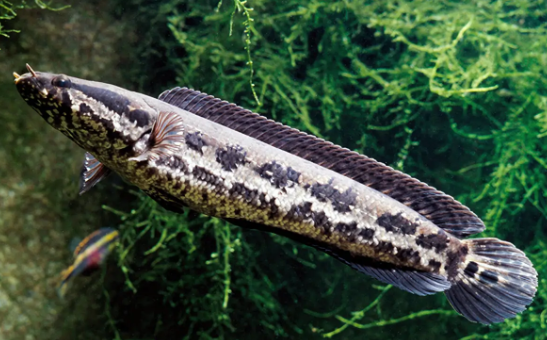

Systématique
- Ordre : Anabantiformes
- Famille : Channidae
- Genre : Parachanna
- Espèce : P. obscura
- Auteur : Günther, 1861

Parachanna obscura est l'espèce la plus répandue du genre Parachanna en Afrique. Ce poisson prédateur présente un corps allongé, cylindrique, avec une tête aplatie couverte de larges écailles, ce qui lui vaut le nom de "tête de serpent". Sa coloration de base est brun-beige avec de grandes taches noires arrondies ou géométriques mal définies le long des flancs.
À l'âge adulte, il atteint généralement une taille de 35 à 45 cm, bien que certains spécimens puissent atteindre 50 cm. Le ventre présente souvent des marbrures jaunâtres ou rougeâtres. C'est un poisson robuste, doté d'une mâchoire inférieure légèrement proéminente munie de dents caniniformes puissantes, faisant de lui un chasseur redoutable.
Parachanna obscura est un prédateur à l'affût, relativement calme mais capable d'attaques fulgurantes. Comme les autres Channidae, il possède un organe suprabranchial pour la respiration atmosphérique obligatoire ; il doit donc pouvoir accéder facilement à la surface de l'eau. Il est particulièrement actif au crépuscule et durant la nuit.
En aquarium, il est solitaire et territorial. Les relations intra-spécifiques sont souvent agressives, sauf chez les couples formés. Il est conseillé de le maintenir seul ou avec des espèces robustes de taille similaire (Polypterus, gros cichlidés). C'est un sauteur exceptionnel ; le bac doit être hermétiquement clos. Il apprécie les zones d'ombre créées par des plantes flottantes et des racines immergées.
Mode : Ovipare avec soins parentaux.
La reproduction est possible en aquarium mais reste peu fréquente. Le couple nettoie un site de ponte ou utilise la végétation de surface. Les œufs sont jaunâtres, huileux et flottent à la surface de l'eau. Une ponte peut compter entre 2000 et 3000 œufs.
L'éclosion survient après 24 à 48 heures selon la température. Les deux parents protègent agressivement les alevins qui forment un "nuage" compact. Les jeunes présentent une livrée différente avec une bande latérale noire continue. Ils se nourrissent initialement de micro-plancton avant de passer rapidement à des proies plus volumineuses.
Dimorphisme sexuel : Très difficile à distinguer. Les femelles matures sont souvent plus corpulentes. Lors de la parade, les couleurs peuvent s'intensifier, les mâles virant parfois au noir ou bleu-noir sombre.
Espérance de vie : 15 à 25 ans en captivité.
On trouve Parachanna obscura dans une vaste zone allant du Sénégal au bassin du Tchad, ainsi que dans les bassins du Nil, du Niger et du Congo. Il affectionne les zones calmes des rivières, les bras morts, les marécages et les plaines inondables riches en végétation marginale.
Son habitat naturel est caractérisé par des fonds vaseux ou rocheux avec beaucoup de débris organiques. L'eau y est tropicale (25-30°C), souvent peu oxygénée, ce qui avantage sa respiration atmosphérique. Il reste immobile de longues heures dissimulé dans les plantes en attendant qu'une proie passe à sa portée.
Répartition

Origine naturelle :
- Afrique de l'Ouest et Centrale : Sénégal, Gambie, Niger, Volta, Tchad, Nil, Congo.
- Localité type : Afrique de l'Ouest.
Statut UICN : Préoccupation mineure (LC). Très commun dans son aire de répartition, c'est également un poisson de consommation important en Afrique.
Paramètres de maintenance
Température : 25 à 30 °C. Espèce strictement tropicale.
pH : 6,0 à 7,5.
GH : 5 à 15 °dGH.
Courant : Faible.
Volume conseillé : Minimum 600-800 L pour un individu ou un couple. Longueur de façade de 150-200 cm recommandée.
Régime alimentaire
Régime : Carnivore / Piscivore.
En milieu naturel, il se nourrit de poissons, d'insectes et d'autres invertébrés.
En aquarium, il accepte les aliments congelés (grosses crevettes, moules, vers de terre, chair de poisson blanc). Les aliments secs (granulés) sont rarement acceptés. Une alimentation variée est nécessaire pour éviter les carences.